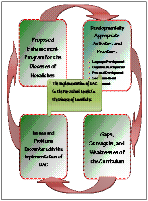

Paper Title :
Assessment Of The Implementation Of Developmentally Appropriate Curriculum:
Perspective In Developing An Enhancement Program For Preparatory Level
Abstract
The objective of the study is to assess the extent of the implementation of developmentally appropriate curriculum in the preparatory level in the eight schools in the Diocese of Novaliches as an aid in enhancing the development and enhancement of the curriculum in the Diocese. This study made use of descriptive survey type of research that utilized locally constructed questionnaire as primary data gathering tool. Essentially, the implementation of DAC in the light of the following domains of the curriculum namely, language competency, cognitive development, personal development, socio-emotional development, and motor development was assessed in aid of curriculum enhancement. It is imperative that teachers incorporate a wide variety of experiences, materials and equipment, and teaching strategies in implementing the developmentally appropriate curriculum to accommodate a broad range of children’s individual differences in prior experiences, maturation rates, styles of learning, needs, and interests. The identified gaps and weaknesses in the implementation of DAC in the Diocese of Novaliches can become a springboard in enhancing the curriculum, activities, and physical set up of the school in order to provide quality and meaningful developmentally appropriate practices among preparatory pupils. Though there is much strength identified in the implementation of DAC, the schools in the Diocese of Novaliches cannot fully realize its successful implementation not unless the vital issues and problems have been addressed. An enhancement program is proposed by the researcher to further improve the implementation of the program in the Diocese of Novaliches.
Authors:
Marilyn L. Cano, Alvin V. Nuqui, Reynaldo C. Cruz
Paper Transcript of Paper Titled :
Assessment of the Implementation of Developmentally Appropriate Curriculum:
Perspective in Developing an Enhancement Program for Preparatory Level
Assessment of the Implementation of Developmentally Appropriate Curriculum: Perspective in Developing an Enhancement Program for Preparatory Level
Marilyn L. Cano
Alvin V. Nuqui
Reynaldo C. Cruz
La Consolacion University Philippines
- Malolos City, Bulacan Philippines
Abstract - The objective of the study is to assess the extent of the implementation of developmentally appropriate curriculum in the preparatory level in the eight schools in the Diocese of Novaliches as an aid in enhancing the development and enhancement of the curriculum in the Diocese. This study made use of descriptive survey type of research that utilized locally constructed questionnaire as primary data gathering tool. Essentially, the implementation of DAC in the light of the following domains of the curriculum namely, language competency, cognitive development, personal development, socio-emotional development, and motor development was assessed in aid of curriculum enhancement. It is imperative that teachers incorporate a wide variety of experiences, materials and equipment, and teaching strategies in implementing the developmentally appropriate curriculum to accommodate a broad range of children’s individual differences in prior experiences, maturation rates, styles of learning, needs, and interests. The identified gaps and weaknesses in the implementation of DAC in the Diocese of Novaliches can become a springboard in enhancing the curriculum, activities, and physical set up of the school in order to provide quality and meaningful developmentally appropriate practices among preparatory pupils. Though there is much strength identified in the implementation of DAC, the schools in the Diocese of Novaliches cannot fully realize its successful implementation not unless the vital issues and problems have been addressed. An enhancement program is proposed by the researcher to further improve the implementation of the program in the Diocese of Novaliches.
Keywords: Developmentally Appropriate Curriculum, Implementation, Assessment, Enhancement Program, Preparatory Level
INTRODUCTION
Educating the preschool children is still a top priority today as it was many years ago when schooling first began as an effort to teach and promote citizenship. Times have changed tremendously since then, as the focus of basic education has shifted to preparing children for success in an ever-changing society. These days, children are learning more at a younger age, and it is up to the early childhood teacher to foster this growth.
Piaget (Chang, 2006) believes that intelligence is the basic mechanism of ensuring balance between the person and the environment. This is achieved through the actions of the developing person on the world. The development of intelligence is a continuous process of assimilation and accommodation that leads to increasing expansion of the field of application of schemes, increasing coordination between them, increasing interiorization and increasing abstraction known to be reflecting abstraction. Piaget also believes that intelligence develops in various ages and periodically changes qualitatively, attaining increasing
boarder becoming more abstract and more equilibrated structures thereby allowing access to different levels of organization of the world.
In addition, children primarily learn through imitation and play especially from birth to four months. As the child continues to develop and mature, he increases his growth in intelligence through visual and sensory development until the child develops to draw insights to form mental representations. Thus the child becomes to be creative over the span of time. Preschool children are between 3 to 5 years old, they are very intuitive and curious. They ask so many questions and they want to know why things behave the way they see or experience them. Much of teachings depend on cognitive abilities that is sharing information and observing signs that things shared are understood. Applying Piaget’s theory to Pre School learning, it is easy to say that the Principles of Developmentally Appropriate Curriculum are very useful because it takes on an unstructured system of learning enabling the learner to be more creative and intuitive. (Chang, 2006)
In 2001, an act was passed known as “No Child Left Behind”, which made it a policy to hold schools accountable for eliminating the persistent gaps in achievement between different groups of children. With the aim of ensuring educational equity, the law requires the reporting of scores disaggregated by student group; that is, reported separately for the economically disadvantaged, major racial and ethnic minorities, special education recipients and English language learners. This in effect made all schools accountable for teaching all their students effectively. However, majority of Americans support the movement’s stated goals, among them that all children should be achieving at high levels. (National Association for the Education of Young Children, 2008). This public support-for the goals if not the methods- can be viewed as a demand that educators do something to improve student achievement and close the gaps that all agree are damaging many future prospects and wasting their potential. As early as 2007 more than three-quarters of the states had some sort of early learning standards- that is, standards for the years before kindergarten- and the remaining states had begun developing them. (NAEYC, 2008) Creating improvements for preschool curriculum is a must. There is a need to be a strong link between improving the cognitive development of the learner and the improvement of the early childhood teachers’ preparation through continuous training and research. The curriculum is a key element in their educational foundation, that if not adequately prepared could result in the child falling behind developmentally. A steady continuation of the child’s developmental growth can be assured by a good curriculum that is constantly reviewed and aligned with the needs of the learner. This simply implies that a diligent review of ECE curriculum is a must if we want the gap to narrow down
What then must be done? It is a must that educators carefully assess the level of the learners, their needs and learn how to differentiate the concepts and content to be introduced according to the varying needs of the learner. Educators must implement Developmentally Appropriate Curriculum approaches to meet the learning standards needed. Further it will be best to capitalize on the teachable moments, to fully engage them in authentic, meaningful learning experiences. Individualization is a key component of DAC to make sure that the needs and interests of every child are focused on in a DAC environment (Bredecamp & Copple, 2007).
The objective of the study is to assess the extent of the implementation of developmentally appropriate curriculum in the preparatory level in the eight schools in the Diocese of Novaliches as an aid in enhancing the curriculum in the Diocese.
FRAMEWORK
This study is anchored on the theory of constructivism which assumes that the learners construct their own knowledge based on interactions with their environment that challenge their thinking. Developmentally appropriate practice (DAP) is based on cognitive learning theories, rooted in the work of Piaget and Vygotsky, which are guided by the premise that development refers to cognitive patterned changes over time. (Abu-Jhaber, Al-Shawareb, and Gheith, 2010)
According to Oakes and Caruso (Abu-Jhaber, Al Shawareb, and Gheith, 2010) DAP curricula focus on the overall development of the whole child including language, cognitive, personal, socio-emotional, and motor. Developmentally appropriate practices are individually, age group and culturally appropriate. These “best practices” relate to the everyday reality of the individuals within group, as well as to the learning community as a whole. DAP curricula are learner-generated and learner-centered, yet teacher-framed. In other words the teacher is the one who judges what is needed to meet the developmental and learning needs of children. DAP curricula encourage problem-solving, critical thinking and intellectual risk-taking, and engender dispositions of life-long learning. Assessment of children in DAP environments is ongoing and continuous, and is done for the purpose of preparing a conducive environment for children’s development and for building upon existing strengths.
Figure 1. Conceptual Model of the Study
Figure 1 presents the conceptual model of the study in assessing the implementation of developmentally appropriate curriculum in the preschool levels in the Diocese of Novaliches in aid of curriculum enhancement.
The extent of implementation of the developmentally appropriate activities and practices of the current curriculum was in the light of the following domains: language competency, cognitive development, personal development, socio-emotional development and motor development.
Language competency refers to the linguistic development of the child in 4 inter-related skills: Listening, Reading, Speaking and Writing. It also includes being able to differentiate different sounds and responses accordingly. It includes being able to express one’s feelings and ideas. It also includes vocabulary building, reading readiness, comprehension, giving opinion and writing thoughts and expressions.
Cognitive development is a field related to the growth and development of a learner’s intelligence which particularly pertains to the information processing of the things the child encounters in his environment and the assimilation of what he encounters with the adult or anyone who can provide him the stimulus needed in the process of cognition.
Personal development encompasses activities that improve awareness and identity, development of talents and potentials build human capabilities and facilitate employability, self development. It also includes the development of other people through informal or formal activities.
Socio-emotional development would be the ability to initiate and maintain a secure relationship. During this development a child must learn how to approach other children, how to negotiate issues, how to take turns and how to communicate effectively. Theorist Eric Erickson in his eight stage theory on emotional development says that three of the eight stages are addressed in the early childhood stage as follows: to trust others, to gain independence, to gain independence in a socially acceptable ways.
Motor development includes the growth of muscular coordination in a child. It is marked by the increase ability to use muscles. It is a process of growth whereby a child acquires and masters the skills to be able to move their body. These are carried by a combination of the brain, the nervous system and the muscles.
The gaps, strengths and weaknesses of the present curriculum in the light of the developmental domains as well as the issues and problems encountered in the implementation of DAC were assessed in aid of developing a program that will enhance the curriculum of the Diocese.
OBJECTIVES OF THE STUDY
The main objective of this study is to assess the implementation of DAC in the eight member schools of the Diocese of Novaliches in aid of curriculum enhancement in the preparatory level.
Specifically, it aims to:
- Assess the extent of implementation of DAC in the eight member schools of the Diocese of
Novaliches in terms of the following domains:
- Language competency;
- Cognitive Development;
- Personal development;
- Social- emotional development; and
- Motor development
2. Identify the gaps, strengths and weaknesses of the present curriculum in the light of the developmental domains?
3. Evaluate issues and problems encountered in the implementation of DAC?
4. Develop an enhancement program that may be proposed to come up with a developmentally appropriate curriculum in the Diocese?
MATERIALS AND METHODS
Methods and Techniques Used. This study used the descriptive survey type of research because according to Beck et al (2007), this method is concerned with the description of the present situation, current practices, characteristics of groups of individuals as well as their behavioral patterns, attitudes, and opinions. The analysis of the present conditions may lead to the identification of weakness or problems for which the researcher sought solutions. Thus, a descriptive study may result in a proposal program or plan of action to solve a particular problem.
A validated semi- structured questionnaire was used as a primary data gathering tool. The extent to which Developmentally Appropriate Curriculum (DAC) is being implemented in the eight schools in the Diocese of Novaliches was identified in the light of the following domains of the curriculum namely, language competency, cognitive development, personal development, socio-emotional development, and motor development.
Respondents of the Study. The respondents of the study were all the 23 teachers and eight administrators in the preparatory level in eight schools in the Diocese of Novaliches. Table 1 shows that the 23 teachers were from Blessed Sacrament Catholic School (4), Colegio San Bartrolome Catholic School (3), Good Shepherd Catholic School (3), Ina ng Buhay Catholic School (2), Our Lady of Lourdes Catholic School (3), Resurrection Catholic School (2), St. Francis Xavier Catholic School (3), and San Isidro Labrador Catholic School (3), respectively.
Table 1
Teachers Respondents of the Study
Schools |
Teachers |
|
f |
% |
|
Our Lady of Lourdes Catholic School |
3 3 |
13.04 13.04 |
Total |
23 |
100 |
Instrument of the Study. The instrument was constructed by the researcher guided by the National Association for the Education of Young Children (2008) and research literature on developmentally appropriate curriculum. The instrument used was composed of two parts. The first part elicited information on the appropriateness of the different activities of the current curriculum in terms of language competency, cognitive development, personal development, socio-emotional development, and motor development. Part two of the instrument assessed the issues and problems encountered in the implementation of Developmentally Appropriate Practices.
After the instrument was approved and validated, a pilot testing was done among pre-school teachers who were not included in the study, to determine whether they would understand them the way the researcher means them. The teachers were asked to identify words or items in the questionnaire that are ambiguous or hard to understand. Essentially, the contents of the instrument were very well understood by the teachers.
Data Processing and Statistical Treatment
The data collected were tabulated and processed using Statistical Packages for the Social Sciences (SPSS). In order to analyze and interpret the data gathered, the following statistical measures were used:
- The extent of implementation of DAC in the eight member schools in the Diocese of Novaliches was quantified using the following scale:
Rating Scale |
Range |
Analytical Description |
Interpretation |
5 |
4.50-5.00 |
DAC implementation is very extensive and functioning excellently |
Implemented to a Very Great Extent |
4 |
3.50-4.49 |
DAC implementation is moderately extensive and functioning very well |
Implemented to a Great Extent |
3 |
2.50-3.49 |
DAC implementation is adequate and functioning well |
Implemented to a Moderate Extent |
2 |
1.50-2.49 |
DAC implementation is limited but functioning well |
Implemented to a Least Extent |
1 |
1.00-1.49 |
DAC implementation is limited and functioning poorly |
None at all |
- The gaps, strengths and weaknesses of the present curriculum as well as the issues and problems encountered were ranked according to their frequencies.
RESULTS AND DISCUSSION
For clarity of presentation, the data are presented in four parts. The first part describes the implementation of developmentally appropriate activities and practices of the current curriculum in terms of language competency, cognitive development, personal development, socio-emotional development, and motor development. Part two pictures the gaps, strengths and weaknesses of the present curriculum in the light of the developmental domains. The third part reveals the issues and problems encountered in the implementation of DAC. The last part features the enhancement program to improve the implementation of DAC in the Diocese of Novaliches.
Domains |
Over-all Mean |
Interpretation |
Language Competency |
3.66 |
Implemented to a Great Extent |
Cognitive Development |
3.78 |
Implemented to a Great Extent |
Personal Development |
3.64 |
Implemented to a Great Extent |
Socio-emotional Development |
3.93 |
Implemented to a Great Extent |
Motor Development |
3.29 |
Implemented to a Moderate Extent |
The Extent of Implementation of Developmentally Appropriate Curriculum
Developmentally appropriate practice(DAP) is a framework of principles and guidelines for best practice in the care and education of young children, from birth through age eight. It is grounded both in the research on how young children develop and learn and in what is known about education effectiveness. The principles and guidelines outline practice that promotes young children's optimallearning and development (NAEYC, 2008). The implementation of developmentally appropriate practices (DAP) in the pre-school level in the Diocese of Novaliches was assessed in terms of language competency, cognitive development, personal development, socio-emotional development, and motor development.
A summary of data on the extent of implementation of DAC practices in the Preparatory level in the Diocese of Novaliches is presented in Table 2. Analysis of data revealed that the extent of implementation of language competency, cognitive development, and personal development was to a great extent. This means that DAC implementation was moderately extensive and functioning very well.
On the other hand, the extent of implementation of developmentally appropriate practices in promoting pupils’ motor development was to a moderate extent. This means that DAC implementation was adequate and functioning well. According to NAEYC (2008), physical education and movement programs for young children should be serious in concentrating on the development of physical skills. These skills are invaluable lifetime tools that children and adults use to successfully participate in regular physical activity and to help maintain health and fitness.
Table 2
Overall Assessment of the Implementation of DAC Practices in Preparatory Level
Research in child development shows that all children develop in a sequential, predictable manner. While all children develop at their own rate, they tend to reach milestones in a predictable pattern. Observing and documenting the physical, emotional, and cognitive development of each child in your care will ensure that you are providing the best learning environment possible. Implementing developmentally appropriate activities and using intentional teaching techniques will help the teachers understand how best to serve the children and families in the classroom. By providing an active learning environment, teachers help children make decisions, solve conflicts, and develop a sense of community. While the teachers are the sole decision makers in a developmentally appropriate classroom, they must be sure to take into account the individual learning styles of the children in their care, as well as any social or family concerns. (Novick, 2003).
According to the NAEYC position statement, DAP programs have “comprehensive, effective curriculum that targets the identified goals, including all those foundational for later learning and school success. In a DAP classroom, children observe and participate in their community and develop constructive relationships with others; they collaborate and talk with peers and adults; they cooperate to solve problems. Teachers help children develop a sense of responsibility and self-regulation; they acknowledge children’s feelings and model skills for resolving conflicts with others. Additionally, “teachers plan curriculum experiences that integrate children’s learning within and across the domains (physical, social, emotional, cognitive) and the disciplines (including language, literacy, mathematics, social studies, science, art, music, physical education, and health).
Needless to say, establishing positive relationships with adults and other children is critical to children’s cognitive, creative, and physical and social development. Teachers must establish authentic relationships with children, playing as partners and having genuine conversations with them, much as they would with another adult. Children sense this respect from adults and, in turn, extend this same kind of respect in their interactions with other adults and children. Of course, building relationships and a classroom community takes time. Thus, teachers maintain a consistent group of adults and children that children relate to on a daily basis. One adult typically meets with the same group of children for planning and recall and small-group time.
Gaps, Strengths and Weaknesses of the Present Curriculum
It was once believed that children were simply new people that only lacked the knowledge of adults in order to be mature and wise. If this were really true, education would simply be the passing down of knowledge from one generation to the next. Now we understand that people think and reason differently during different stages of their lives. The way a child of three thinks is qualitatively different than the way a child of fifteen does. Further, as has been stated by Piaget, the stages that people pass through are followed in a sequential order, with none of the stages being skipped or followed in a different order. Children from birth through eleven or more years of age go through four cognitive stages. Basically these stages show that the way children learn and make sense of the world changes from concrete manipulation to abstract manipulation of objects and information as they move through these stages. Hence, the implementation of DAC in the Preparatory level is very important in developing the many aspects of pupils. By identifying the gaps, strengths, and weaknesses of the DAC implementation, a sound and logical enhancement program can be realized.
The identified gaps, strengths, and weaknesses of the DAC implementation in promoting language competency, cognitive development, personal development, socio-emotional development and motor development were presented in Tables 22-26
Language Competency. In terms of language competency, encouraging the pupils to raise their hands if they know the answer was identified to be the primary strength of the current curriculum. This was followed by giving simple directions in English, using a routine exercise each day to involve pupils in speaking, praising pupils for their accomplishments, and encouraging the pupils to say polite words.
Meanwhile, there are areas that can still be improved in terms of having activities where pupils speak into a tape recorder, and they listen to their voice, ensuring the availability of television, computers, CD’s about the environment and plants inside the classroom.
NAEYC (2008) suggested that in order to sustain an individual child’s effort or engagement in purposeful activities, teachers select from a range of strategies, including but not limited to modeling, demonstrating specific skills, and providing information, focused attention, physical proximity, verbal encouragement, reinforcement and other behavioral procedures, as well as additional structure and modification of equipment or schedules as needed.
A cornerstone of developmentally appropriate teaching is intentionality. Teaching that meets learners where they are and that helps them to reach challenging and achievable goals does not happen by chance. In everything good teachers do—from setting up the classroom to assessing children to planning the curriculum—must be intentional. They are purposeful and thoughtful about the actions they take, and they base their actions on the outcomes the program is trying to help children reach. The intentional teacher is guided by those outcomes even in responding to unexpected opportunities—”teachable moments”.
Cognitive Development: The following strengths of DAC implementation were identified in terms promoting cognitive development namely: respecting individual differences of the pupils, accompanying pupils to educational field trips, providing material for counting activities, ensuring the availability of pictures of objects associated with each letter of the alphabet, and providing chart of letters of the alphabet displayed inside the classroom.
The gaps and weaknesses of the current DAC implementation were making an aquarium available inside the classroom with fishes which pupils can fees, exposing pupils to the use of microscopes, binoculars to see small, distant objects, exposing the pupils to a garden plot where they can plant vegetables and harvest them in time, asking pupils to make their terrarium, ensuring the availability of a garden plot where pupils can plant.
Because people think qualitatively different at different stages of their development, learning activities need to match the way each child successfully gains understanding and makes connections. In order for the pupils to be actively engaged with their learning, the educator should assess their cognitive levels and determine their strengths and weaknesses.
Personal Development: Praising and reinforcing pupils to recognize their worth for a job well done was the emerging strength of DAC implementation to promote personal development. This was immediately followed by ensuring that trash cans are available inside the classroom where pupils can deposit their trash, making pupils bring in their pockets their own clean hanky to use, following a planned time schedule, and ensuring the availability of cabinets where pupils can put and keep their personal belongings which they can easily identify.
Other activities that need further improvement are making certain that the different kinds of costumes of community helpers are available inside the classroom, preparing an area where teacher hands over different kinds of costumes or accessories for your pupils to use when dressing up, ensuring the availability of full-body size mirror, lavatory, and reminding pupils for their overly dangerous behavior.
The sensory materials such as dresses, full size body mirror, accessories and the like are vital in promoting the personal development of children. Hence, the schools of the Diocese of Novaliches may consider the following characteristics of materials as suggested by Reynold et al (2002) for personal development:
- Control of error. Materials are designed so that children can see whether they make a mistake; for example, a child who does not build the blocks of the pink tower in their proper order does not achieve a tower effect.
- Isolation of a single quality. Materials are designed so that other variables are held constant except for the isolated quality or qualities. Therefore, all blocks of the pink tower are pink because size, not color, is the isolated quality.
- Active involvement. Materials encourage active involvement rather than the more passive process of looking.
- Attractiveness. Materials are attractive, with colors and proportions that appeal to children.
Socio-emotional Development: Praises and reinforcement of pupils to recognize their worth their accomplishments are consistently being implemented in order to promote the socio-emotional development of preparatory pupils. Other identified strengths of the current DAC implementation were displaying happiness with their own accomplishments, encouraging pupils to play together with other classmates, encouraging pupils to volunteer in any class activity, and encouraging pupils to clap their hands to show appreciation for work done by other classmates.
The schools may consider the following gaps and weaknesses in improving their curriculum: provision of an area where pupils can be by themselves if in case they are not yet ready to join the other children for the given activity, provision of an area where pupils can be by themselves if in case they are not yet ready to join the other children for the given activity, provision of area where pupils can "Pretend Play" with other children, and encourages parallel play.
Research demonstrates the importance of socio-dramatic play as a tool for learning curriculum content with 3- through 6-year old children. When teachers provide a thematic organization for play; offer appropriate props, space, and time; and become involved in the play by extending and elaborating on children’s ideas, children’s language and literacy skills can be enhanced. (Bredekamp and Copple, 2009)
Motor Development: It was found out that enjoying action songs that use finger and hand movements was very much implemented in order to promote motor development. Other identified strengths were helping or assisting children with their task, involving pupils in exercise and sports activities and providing small motor activities, and providing time to play with other pupils.
On the other hand, the identified gaps and weaknesses were having threading and sewing activities, punishing, scolding, and putting to shame pupils who figure in accidents inside the classroom, availability of sand area inside the classroom, have balancing on a low, wide beam for outdoor exercises, have balancing on a low, wide beam, and availability of water area inside the classroom.
Developmentally appropriate practice can be hard to spot by the untrained eye. Developmentally appropriate practice can best be observed when there is an active learning environment. In active learning, children come to understand concepts by playing, hypothesizing, experimenting, and doing. Most activities in a developmentally appropriate preschool classroom are not teacher directed. The projects and activities are set up based on individual children's needs, and take into account each child's strengths and weaknesses, developmental level and interests.
There is a delicate balance of teacher directed and child centered activities, with minimal time spent in teacher directed activities such as circle time. Children are not required to sit still and absorb information for long periods of time without being active participants in the activity. Developmentally appropriate environments take advantage of teachable moments and capitalize on intentional teaching techniques. Children are encouraged to interact with materials in their environment, as well as with teachers and peers. The identified gaps and weaknesses in the implementation of DAC in the Diocese of Novaliches can become a springboard in enhancing the curriculum, activities, and physical set up of the school in order to provide quality and meaningful developmentally appropriate practices among preparatory pupils.
Issues and Problems Encountered in the Implementation of DAC
A child-centered program is one in which educators first strive to meet student needs. The antithesis of this would be a curriculum-centered approach which places the mastering of predetermined curriculum goals over that of meeting student needs. In order for a child to be successful, they need to meet the needs of their own developmental tasks. As they do this, they will be grounded and ready to be engaged by a developmentally appropriate academic curriculum.
According to NAEYC (2008), the world of early care and education stands to gain in some respects from a closer relationship with the K–12 system. Given the shortage of affordable, high-quality programs for children under 5 and the low compensation for those staff, advocates see potential benefits to having more 4-year-olds, and perhaps even 3-year-olds, receive services in publicly funded schooling. It is for this reason that the issues and problems encountered by the schools in the Diocese of Novaliches in the implementation of DAC in the preparatory level were evaluated.
The top five issues and problems that schools have been encountering were as follows: the Pre School Department is not given as much attention as the Elementary and High School Levels in terms of curricular review, facilities and materials and Faculty Development (1st), majority of the Faculty Members are not ECE graduates (2nd), schools of the Diocese of Novaliches are not all set up according to DAP because of limited funds (3rd), uniformity of practices of the implementation of developmentally appropriate curriculum needs to be emphasized in the diocesan educational system (4.5th), and the evaluation system is not truly ready to conform to DAP system (4.5th).
This means that the schools in the Diocese of Novaliches can still study the possibility of improving their ECE curriculum especially in the preparatory level. This situation is not only happening in the Philippines. The United Nations International Children’s Emergency Fund or UNICEF (Abu-Jaber et. al, 2010) explicitly pointed out the poor conditions in most kindergartens in Jordan, as well as lack of in-service and personnel training in the implementation of early childhood education. Education provided at these kindergartens mainly centered around academic development, with little emphasis on other developmental areas.
In accordance with the NAEYC (2008), some of the standard implementation is inadequate, inappropriate, or incomprehensive. Hence, the UNESCO (2006) has recommended the following initiatives and recommendations for DAC implementation:
- Prepare an interactive curriculum that has been evaluated and modified accordingly;
- Prepare the general early childhood curriculum and its outputs;
- Develop a criteria and conditions for evaluating an ECE program;
- Train all teachers on the interactive curriculum and on the working program with young children;
- Coordinate with Philippine universities to have early childhood education majors in order to empower teachers academically; and
Work on expanding the programs and projects that relate to each childhood education.
PROPOSED ENHANCEMENT PROGRAM TO IMPROVE THE IMPLEMENTATION OF DAC IN THE DIOCESE OF NOVALICHES
Key Result Area |
Critical Issues |
Proposed Curriculum Enhancement/s |
Strategies |
Person Responsible |
Budget |
Expected Output |
|
|
|
|
|
|
|
|
|
|
|
|
P15,000.00/ teacher/ trime
P20,000.00/ principal/ trimester |
|
|
|
|
|
|
P50,000.00 |
Improved ECE curriculum aligned with the DAC standards |
CONCLUSIONS
Based on the findings of the study, the following conclusions were drawn:
1. It is imperative that teachers incorporate a wide variety of experiences, materials and equipment, and teaching strategies in implementing the developmentally appropriate curriculum to accommodate a broad range of children’s individual differences in prior experiences, maturation rates, styles of learning, needs, and interests.
2. The identified gaps and weaknesses in the implementation of DAC in the Diocese of Novaliches can become a springboard in enhancing the curriculum, activities, and physical set up of the school in order to provide quality and meaningful developmentally appropriate practices among preparatory pupils.
3. Though there is much strength identified in the implementation of DAC, the schools in the Diocese of Novaliches cannot fully realize its successful implementation not unless the vital issues and problems have been addressed.
4. An enhancement program is proposed by the researcher to further improve the implementation of the program in the Diocese of Novaliches.
RECOMMENDATIONS
Based on the findings and conclusions stated, the following are the recommendations of the study.
- That the schools in the Diocese of Novaliches continuously monitor and evaluate the extent of implementation of DAC, most especially in promoting motor development to ensure that the curriculum, activities, materials and physical set-up are in accord with the standards set by NAEYC. Budget allocation may be reviewed to address the infrastructure needs of DAC implementation.
- That teachers consistently implement the DAC practices that were found to be regularly implemented and improve the DAC practices where implementation needs further strengthening.
- That the Diocese of Novaliches may consider the following advocacies of UNESCO for better DAC implementation:
- Prepare an interactive curriculum that has been evaluated and modified accordingly;
- Prepare the general early childhood curriculum and its outputs;
- Develop a criteria and conditions for evaluating an ECE program;
- Train all teachers on the interactive curriculum and on the working program with young children;
- Coordinate with Philippine universities to have early childhood education majors in order to empower teachers academically; and
- Work on expanding the programs and projects that relate to each childhood education
- That the proposed enhancement program for the Diocese of Novaliches be adopted and implemented to help improve the implementation of the program.
LITERATURE CITED
- Abu-jaber, M., Al-Shawareb, A., and Gheith, E. (2010). Kindergarten teachr’s beliefs toward developmentally appropriate practice in Jordan. Early Childhood Education Journal 38:65-74, DOI 10.1007/s10643-010-0379-z
- Beck et al (2007). Nursing research principles and methods, 7th edition. pp. 19-20.
- Bredekamp, S., & Copple, C. (2009). Developmentally appropriate practice in early childhood programs (3rd ed.). Washington, DC: NAEYC (National Association for the Education of Young Children).
- Carta, J., Schwartz, I., Atwater, J. and McConnell, S. (1991). Developmentally appropriate practice: appraising its usefulness for young children with disabilities. Topics in Early Childhood Special Education pp. 1-20.
- Chang, C., Austin, A., and Piercy, K. (2006). Provider management of child stress behavior in family day care facilties: scaffolding for learning and development by developmentally appropriate practice, The Journal of Genetic Psychology, 167(2) 159-177
- National Association for the Education of Young Children (2008). Guidelines for Decisions About Developmentally Appropriate Practice: Developmentally Appropriate Practice in Early Childhood Programs Serving Children from Birth through Age 8 (online). Retrieved from http://www.naeyc.org/about/position/dap4.htm.
- Novik, R. (1993). Activity-based intervention and developmentally appropriate practice: points of convergence. Topics in Early Childhood Special Education 13:4, 403-417
- Reynolds, A., Temple, J., Robertson, D., & Mann, E. (2002). Age 21 cost-benefit analysisof the Title I Chicago Child-Parent Centers. Madison, WI: University of Wisconsin (Institute for Research on Poverty Discussion Paper #1245-02).
AUTHORS’ PROFILE
MARILYN L. CANO, MAEd is the consultant of MAPSA. She earned her Master of Arts in Education major in Early Childhood Education at La Consolacion University Philippines. Ms. Cano also handled professional subjects at the University of the Philippines. She is the former school Principal of San Isidro Labrador Elementary School.
ALVIN V. NUQUI, PH.D., PTRP is the Research Director of LCUP. He is a graduate of Doctor of Philosophy in Educational Leadership Management and Master of Arts in Behavioral Science major in Psychology. Mr. Nuqui is a lecturer at the Pamantasan ng Lungsod ng Maynila where he obtained his Baccalaureate degree in Physical Therapy and his “Gintong Ani Award” for being an outstanding alumnus in March 2010, 2011, and 2012.
REYNALDO C. CRUZ, Ed.D. earned his Doctor of Education in Higher Education Management degree at the National Teachers College. He took special training in English Instruction in British Columbia, Canada under the RP-Canada Fellowship Program. He has served as Provincial Administrator in the Office of the Governor in the province of Bulacan. A professor at the School of Advanced Studies, Bulacan State University, Dr.Cruz is the former Director of the URC Research and Development Office, and currently the Executive Vice President and Vice President for Academic Affairs of LCUP. Dr. Cruz was a recipient of Bulacan’s 2010 “Dangal ng Lipi” award in Education.